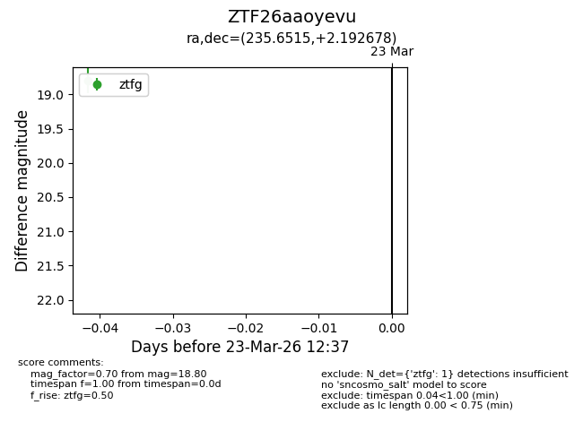
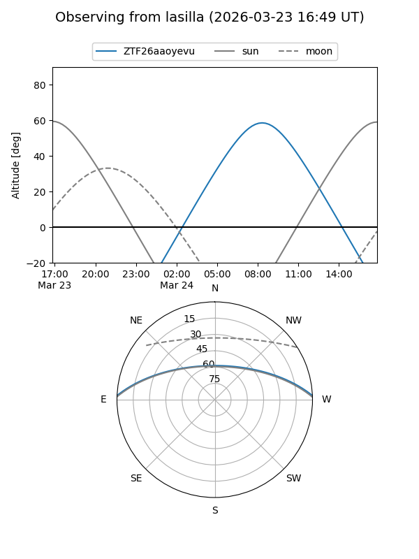
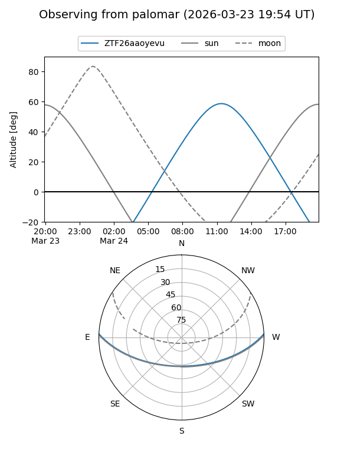

ZTF26aaoyevu
Target ZTF26aaoyevu at 2026-03-23 12:39
Aliases and brokers:
FINK: link
Lasair: link
ALeRCE: link
alt names
ZTF26aaoyevu (ztf,fink_ztf)
Coordinates:
equatorial (ra, dec) = 235.6515,+2.19268
equatorial (HMS+DMS) = 15:42:36.37,+02:11:33.64
galactic (l, b) = (9.0676,+42.07188)
Flags:
Photometry:
last ztfg=18.80
1 ztfg detections
Lightcurve

Visibility


Additional plots